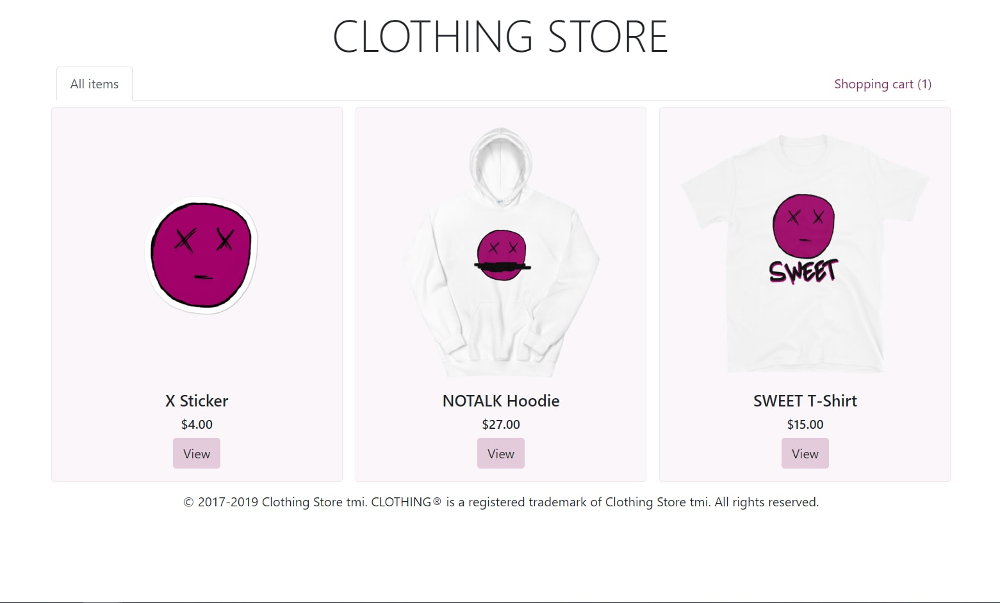
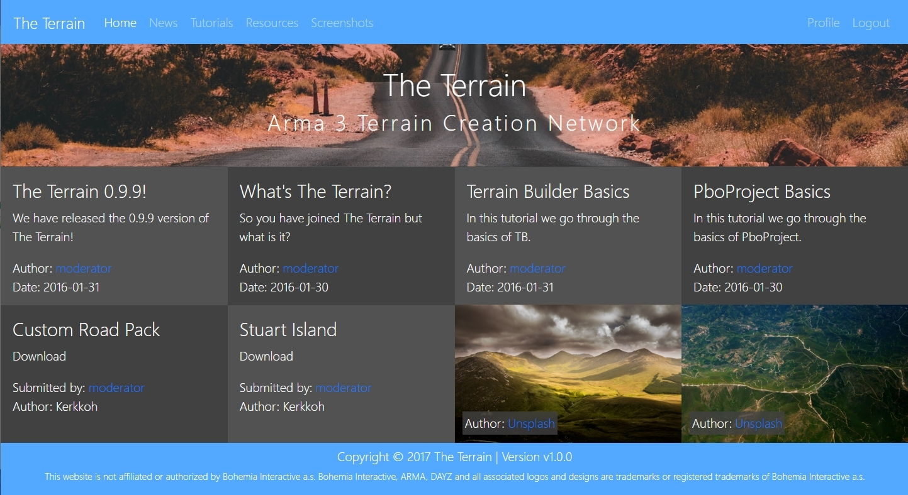
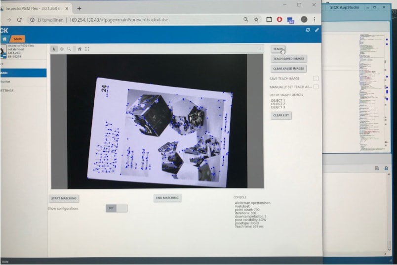
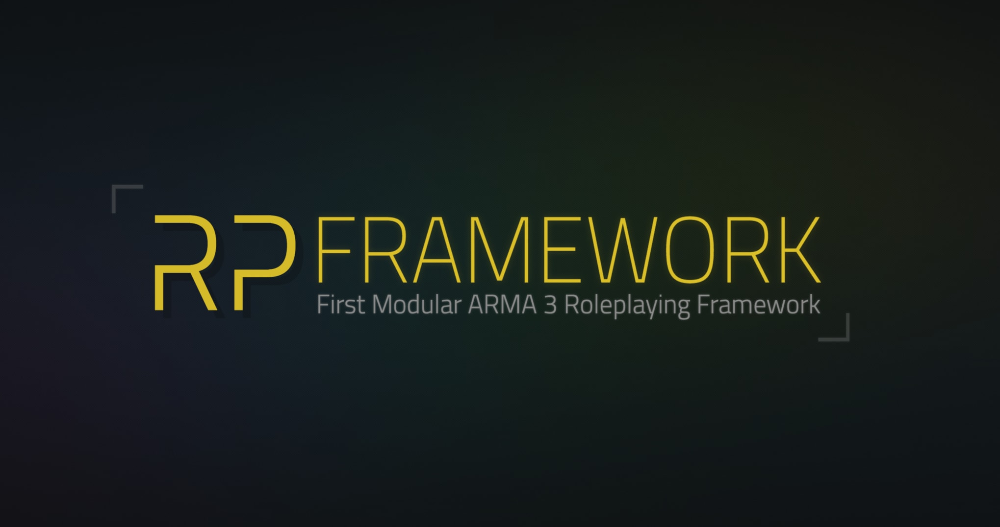
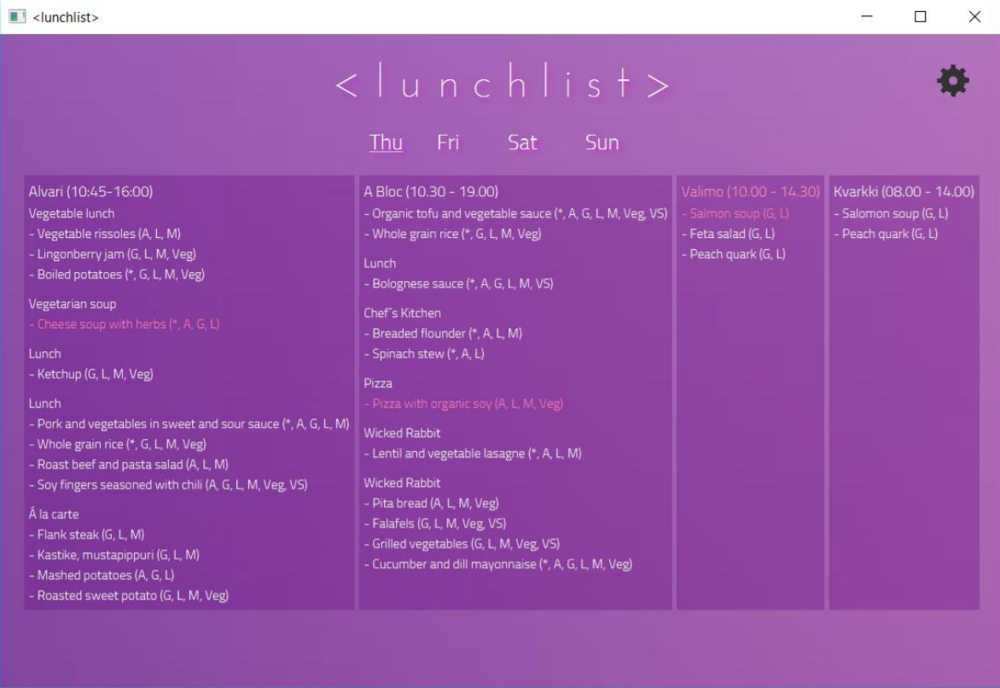
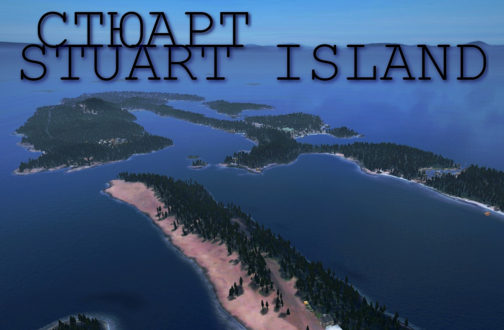

Just me,
Kerkko,
a developer.
Just me,
Kerkko,
a developer.
>about
I'm a full-stack developer based in Espoo, Finland. I'm currently a third-year student pursuing a bachelor's degree with a computer science major and a data science minor at Aalto University.
I love keeping things simple, minimalistic and no-nonsense. I also dislike re-inventing the wheel. One of my passions is prototyping things quickly, and keeping development agile. On top of developing responsive frontends, I enjoy designing them, and I have spent a considerable amount of time with Lunacy (roughly, Sketch for Windows) designing sites. In fact, this site was initially designed in Lunacy and the .sketch file is here!
I also have a hobby turned part-time job of modding games such as Arma 3 and DayZ. This hobby has given me several years of experience designing complex systems, making game-ready 3D models, level design and comping up with interesting gameplay for complex game modes.
Finally, I also do electronic music production, but I won't bore you with the details.
You can contact me via email kerkko.karttunen me.com
me.com
>portfolio
Simple Clothing Store
{kind=link}
A functional simple clothing store completed as a hobby project to allow for the easy sale of clothing items from an on-demand printing company Printful. Utilizes React for frontend, Node.js for backend, Printful REST API for completion of orders, and Paypal API for payments.
The Terrain
{kind=link}
A content sharing site made for an Arma 3 modding community. The site was never finished completely, but it implements a working functionality for registering, logging in, brute force login mitigation, profiles, articles, tutorials and sharing of links. The site has a Node.js backend that serves Handlebars templates, and the frontend uses jQuery for most actions. It also uses NeDB (MongoDB -like database) for a local database for cookies, accounts, etc.
Aalto University Protocamp
 >project site{kind=link}
Machine vision-based Lua project for recognizing and teaching objects (magazines) from live images, that works in an integrated system composed of SICK's machine vision camera. Completed using SICK's proprietary tools and libraries for object recognition. The end-users were supposed to be companies that needed to classify large amounts of magazines and sort them. Created in a team of five as a prototype for SICK.
RPFramework
 >github{kind=link}
RPFramework is a modular open-source roleplaying mission, server, and addon framework for the game Arma 3. The framework allows Arma 3 modders to create their own modular and scalable modifications, missions and custom content to the game. It was built with modularity and scalability in mind, so building something on top of it is much like building a simple lego set where all pieces fit together nicely, and if it needs to be expanded, one can just add more pieces. On top of this, it uses a MySQL database for storing information.
lunchlist
 >github{kind=link}
A lunch list application implemented using Scala, ScalaFX and ScalaFXML. This application utilizes RESTful APIs from several campus restaurants near Aalto University, and shows the user differents foods available at the restaurants. It also allows for the user to set a favorite restaurant and list different favorite ingredients or foods that are highlighted. The application was designed and implemented by me as a course project.
Stuart Island
{kind=link}
A game level (terrain) designed and implemented for DayZ using proprietary level creating tools. Stuart Island is about 5x5 km in its entirety, and it houses some military and civilian infrastructure, all of which is designed to convince and immerse the player completely into the post-apocalyptic environment. The level includes several self-made custom assets, such as houses and other structures. It has been downloaded more than 2000 times already on Steam Workshop.
>skills
I'm especially fluent in JavaScript and other languages required in web development like HTML & CSS. I also have several years' worth of experience with SQL databases and a few years of experience with NoSQL databases. Recently, I have also picked up React in the year 2019 and completed the Full Stack Open 2019 course from the University of Helsinki. My technical abilities aren't limited to web development, as I have a solid background in programming in Scala, C, C++, Lua, Java, and other C#/Java-like languages. I also enjoy doing 3D modeling, texturing, and game level design. I'm an avid advocate of agile methods and an experienced user of Scrum in team projects. My other less technical skills include being able to work independently & in a team, and changing fluidly between the two. I also have experience developing software for, and with, the open-source community.
I realize that skill charts/graphs are often very subjective, but I have included one here to illustrate the relative difference between different skills.